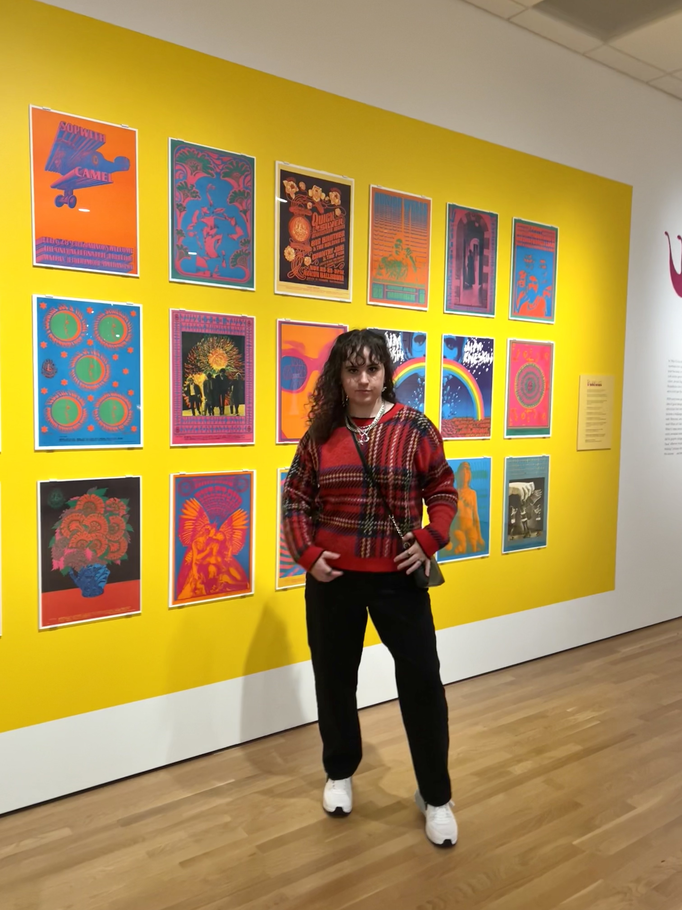

Hi!! I was born and raised in Colorado and have always been involved in different mediums of art, starting with my interest in crafts as a kid. I am currently studying Media Arts and Journalism at the University of Montana, and will be graduating in December. I love finding ways to turn my digital creations into physical ones, mainly through screenprinting and relief printmaking. I hope to soon sell prints and eventually some clothing with my designs on them!

This website was fully coded by me using HTML and CSS!